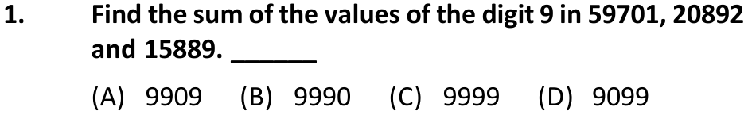
Find the sum of the values of the digit 9 in 59701, 20892 and 15889. ______
9909
9990
9999
9099
(D) 9000 + 90 + 9 = 9099
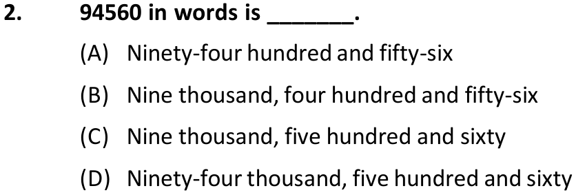
94560 in words is _______.
Ninety-four hundred and fifty-six
Nine thousand, four hundred and fifty-six
Nine thousand, five hundred and sixty
Ninety-four thousand, five hundred and sixty
(D) 94560 → Ninety four thousand five
hundred & sixty
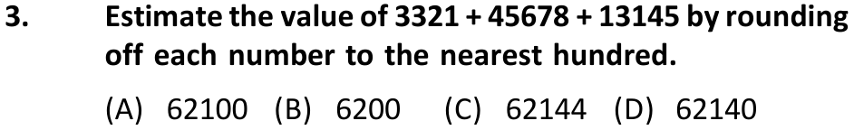
Estimate the value of 3321 + 45678 + 13145 by rounding off each number to the nearest hundred.
62100
6200
62144
62140
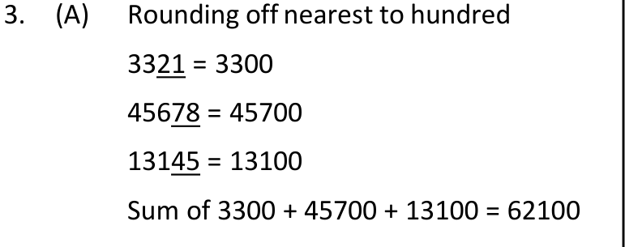
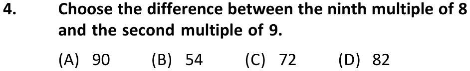
Choose the difference between the ninth multiple of 8 and the second multiple of 9.
90
54
72
82
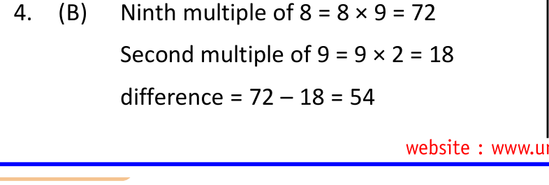
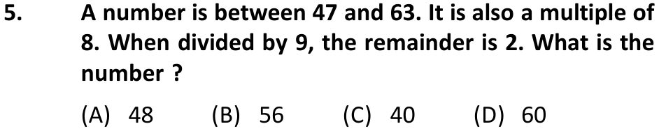
A number is between 47 and 63. It is also a multiple of
8. When divided by 9, the remainder is 2. What is the number ?
48
56
40
60
(B) Multiples of 8 = 8, 16, 24, 32, 40, 48, 56,
63, 80
Numbers between = 47 & 63 = 48 and 56 Divide 48 ÷ 9 = 5 R 3
Divide 56 ÷ 9 = 6 R 2
So, the number is 56
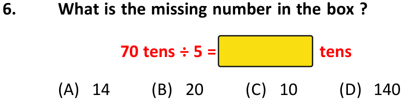
What is the missing number in the box ?
tens
14
20
10
140
(A) 70 tens ÷ 5 = 700 ÷ 5
= 140 = 14 tens
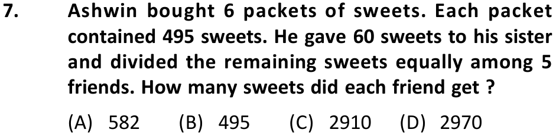
Ashwin bought 6 packets of sweets. Each packet contained 495 sweets. He gave 60 sweets to his sister and divided the remaining sweets equally among 5 friends. How many sweets did each friend get ?
582
495
2910
2970
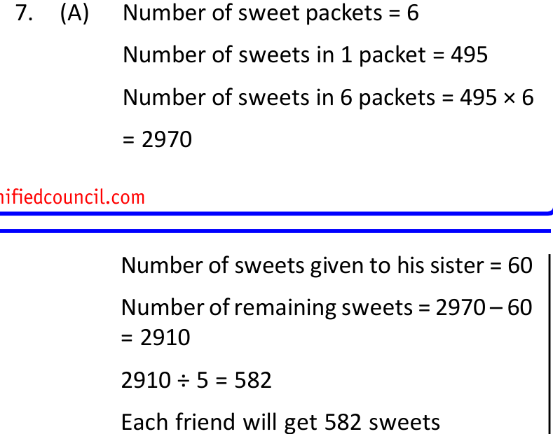
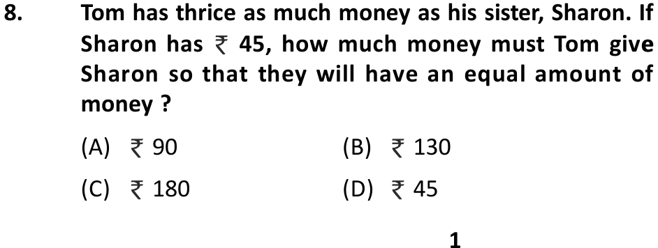
Tom has thrice as much money as his sister, Sharon. If Sharon has 45, how much money must Tom give Sharon so that they will have an equal amount of money ?
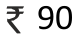
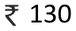
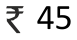
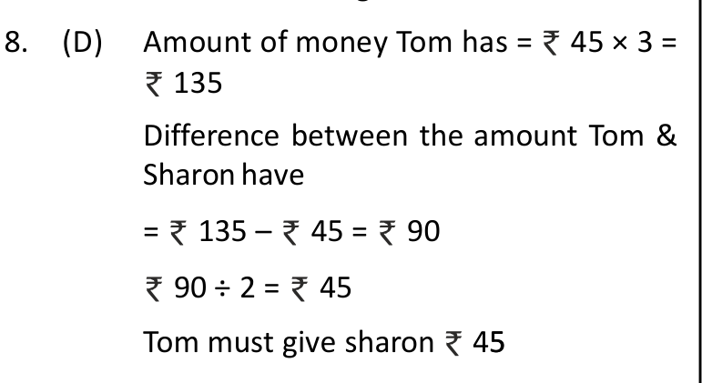
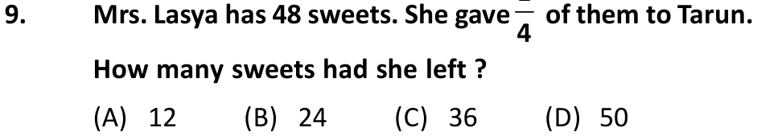
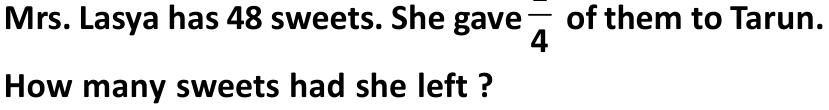
12
24
36
50
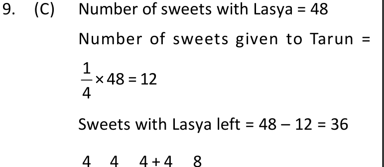
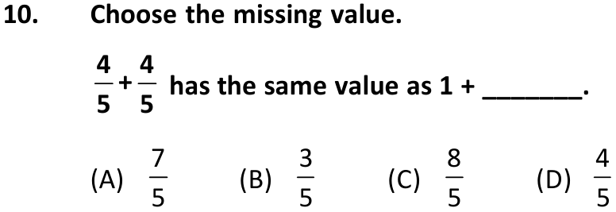
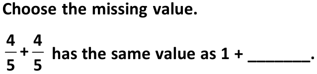
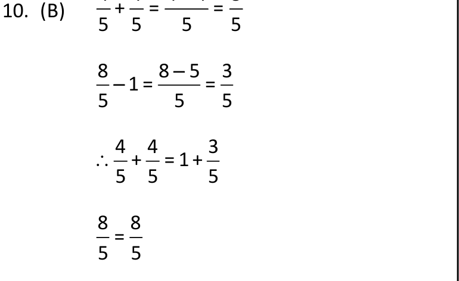
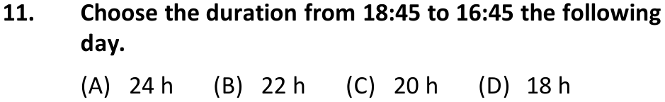
Choose the duration from 18:45 to 16:45 the following day.
24 h
22 h
20 h
18 h
Duration from 18 : 45 to 16 : 45 the following day
18 : 45 to 00 : 45 = 6 hours
00 : 45 to 16 : 45 = 16 hours
Duration = 6 hours + 16 hours = 22 hours
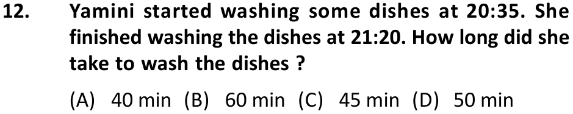
Yamini started washing some dishes at 20:35. She finished washing the dishes at 21:20. How long did she take to wash the dishes ?
40 min
60 min
45 min
50 min
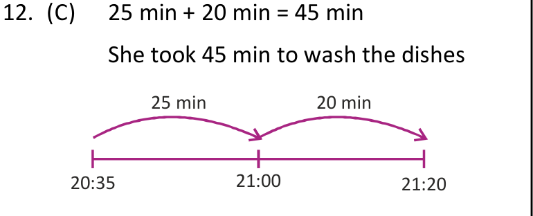
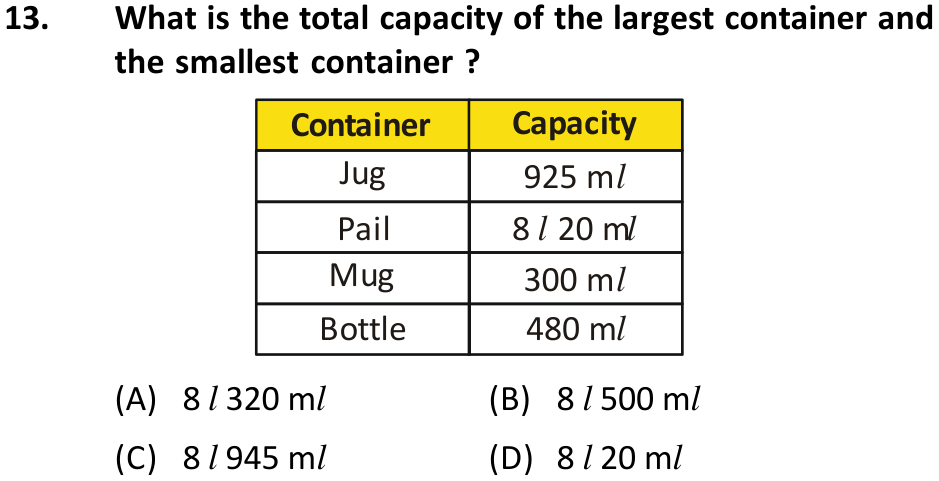
What is the total capacity of the largest container and the smallest container ?
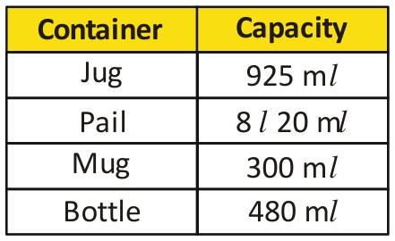
8 l 320 ml
8 l 500 ml
8 l 945 ml
8 l 20 ml
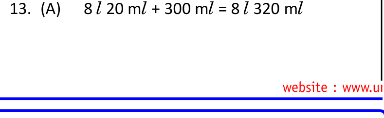
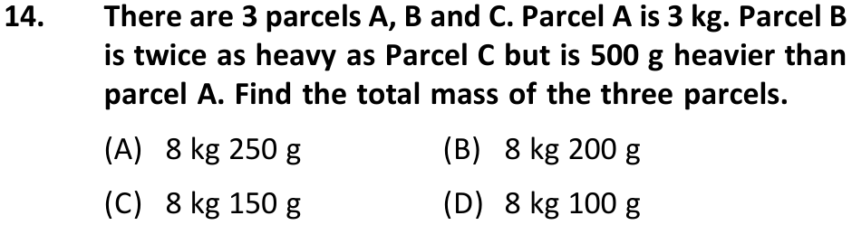
There are 3 parcels A, B and C. Parcel A is 3 kg. Parcel B is twice as heavy as Parcel C but is 500 g heavier than parcel A. Find the total mass of the three parcels.
8 kg 250 g
8 kg 200 g
8 kg 150 g
8 kg 100 g
Parcel B → 3 kg + 500 g = 3 kg 500 g Parcel C → 3 kg + 500 g ÷ 2 = 1 kg 750 g Total mass
= 3 kg + 3 kg 500 g + 1 kg 750 g
= 8 kg 250 g
The total mass of the three parcels is 8 kg 250 g
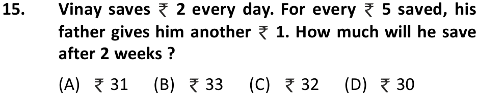
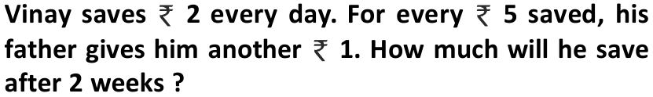
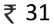
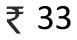
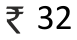
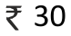
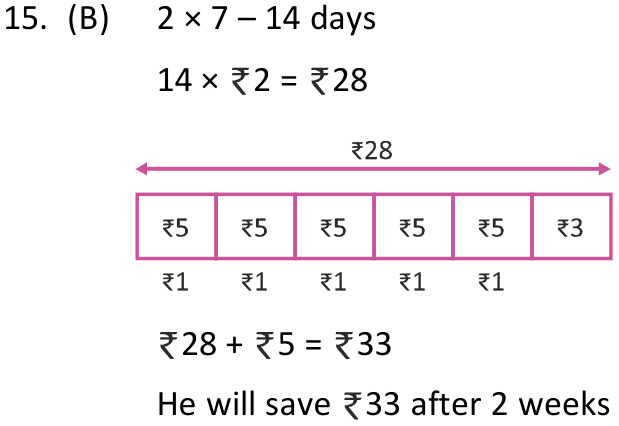
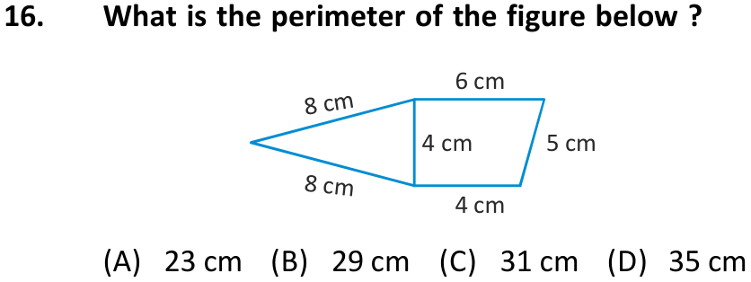
What is the perimeter of the figure below ?
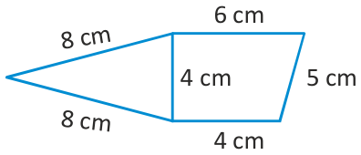
23 cm
29 cm
31 cm
35 cm
8 + 6 + 5 + 4 + 8 = 31 cm
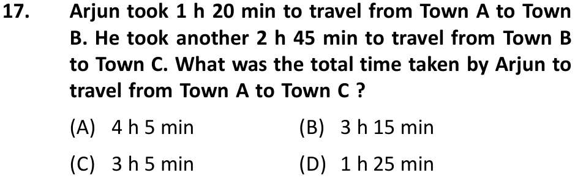
Arjun took 1 h 20 min to travel from Town A to Town B. He took another 2 h 45 min to travel from Town B to Town C. What was the total time taken by Arjun to travel from Town A to Town C ?
4 h 5 min
3 h 15 min
3 h 5 min
1 h 25 min
1 h 20 min + 2 h 45 min = 80 min + 165 min
= 245 min
= 4 h 5 min
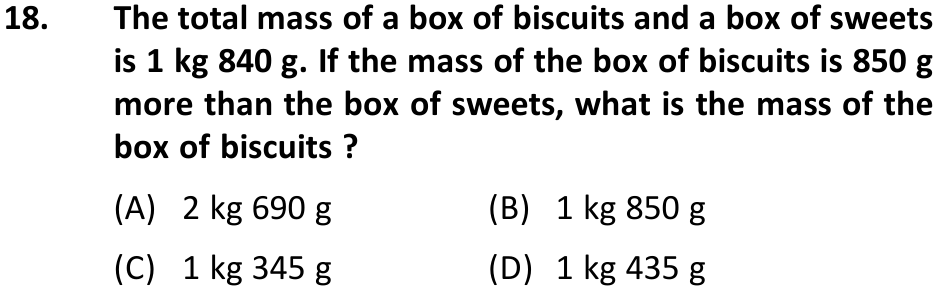
The total mass of a box of biscuits and a box of sweets is 1 kg 840 g. If the mass of the box of biscuits is 850 g more than the box of sweets, what is the mass of the box of biscuits ?
2 kg 690 g
1 kg 850 g
1 kg 345 g
1 kg 435 g
1 kg 840 g + 850 g = 2 kg 690 g 2 kg 690 g ÷ 2 = 1 kg 345 g
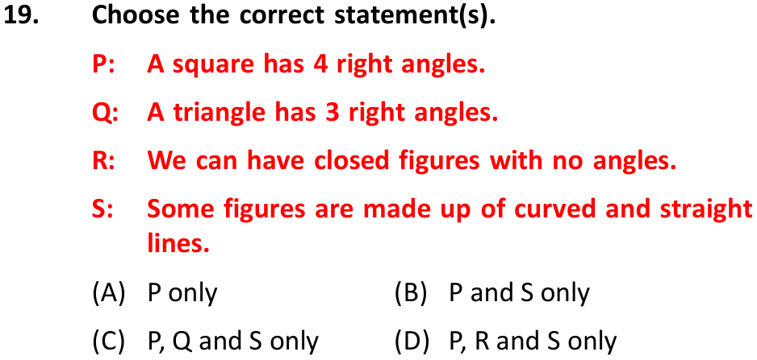
Choose the correct statement(s).
P: A square has 4 right angles.
Q: A triangle has 3 right angles.
R: We can have closed figures with no angles. S: Some figures are made up of curved and straight
lines.
P only
P and S only
P, Q and S only
P, R and S only
Note that we can have closed figures (like circles, ovals, etc.) which have no angles. They are made up of smooth curves. Only statement B is not true as a triangle cannot have more than 1 right angle.
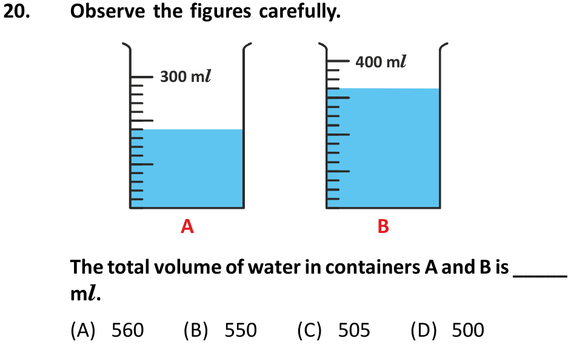
Observe the figures carefully.
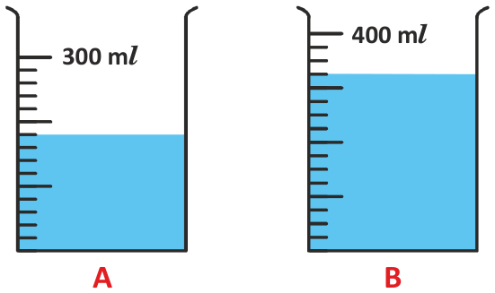
The total volume of water in containers A and B is _____ ml.
560
550
505
500
Total volume of water in containers A and B → 180 + 325
= 505 ml
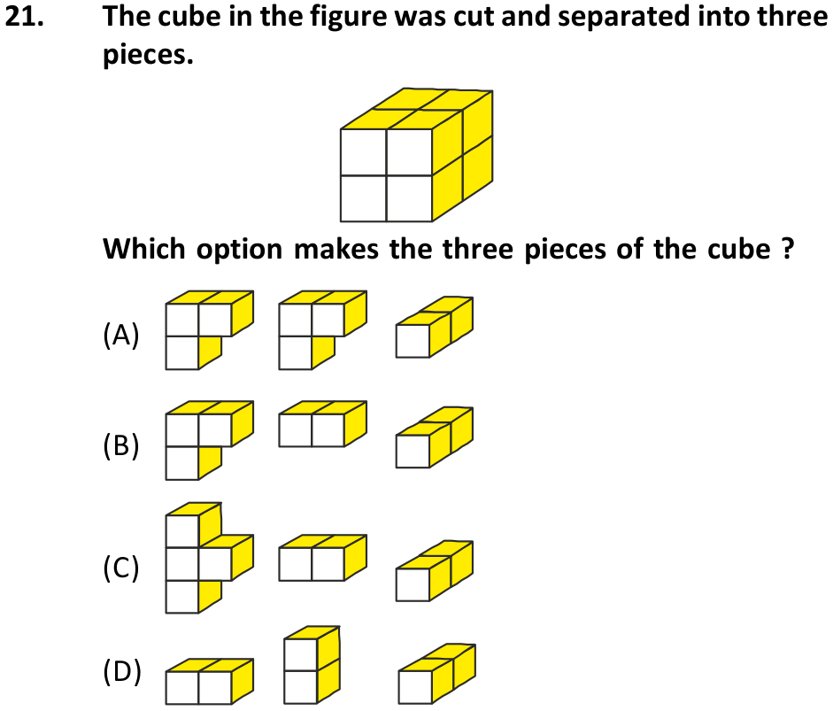
The cube in the figure was cut and separated into three pieces.
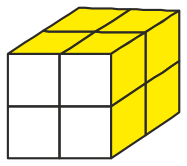
Which option makes the three pieces of the cube ?
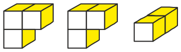
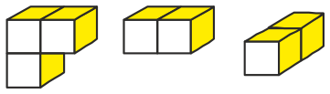
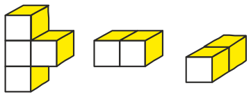
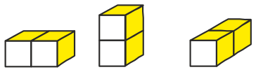
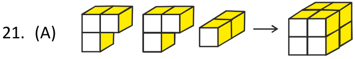
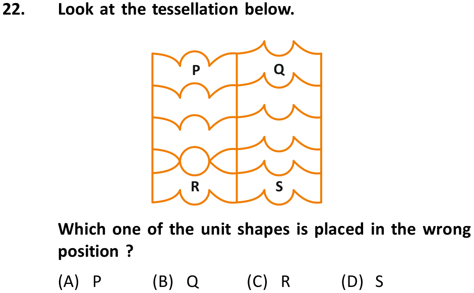
Look at the tessellation below.
Which one of the unit shapes is placed in the wrong position ?
P
Q
R
S
Choose the symmetrical option.
It took 4 min to fill Tank A completely. It took 3 min 31 s longer to fill Tank B completely. How long did it take to fill Tank B ?
451 s
351 s
271 s
29 s
A number line is shown below. What is the missing mixed number in the box ?
ABCD is a square.
Choose the perimeter of the shaded region.
23 cm
32 cm
46 cm
64 cm
If = 4041
= 5118
then = ?
2335
2353
2533
3523
Arrange the fractions in order, from the greatest to the smallest.
What is the next number in this pattern ?
46089
55089
55189
55989
The total marks that Shiva and Rakesh scored in a Mathematics test was 171. Shiva scored 23 more marks than Rakesh. How many marks did Rakesh score in the test ?
74
85.5
97
194
During a school excursion, there were 2 teachers attending to every 9 pupils. How many teachers are required if there were 216 pupils ?
72
56
48
36
216 ÷ 9 = 24 24 × 2 = 48
Which option is the best estimate for 5788 × 39 ?
5000 × 40
5500 × 40
6000 × 30
6000 × 40
5788 when rounded off to nearest hundreds it is 5800 (not in options) and when rounded off to nearest thousand it is 6000
5788 ≈ 6000
39 ≈ 40
5788 × 39 ≈ 6000 × 40
Thrice a number is greater than half the same number by 30. What is the number ?
12
6
30
15
Jaya is thinking of an even number that is a multiple of 4 and a factor of 56. It is greater than 10 but smaller than 30. What number is Jaya thinking of ?
16
4
20
24
28
Complete the matrix.
Which shape is similar to the group ?
Select the missing number in the series.
18
21
25
29
Which option will come in place of question mark ?
: ?
Choose the odd one out from the following.
Pen
Newspaper
Magazine
Letter
Except pen remaining words are belongs to paper.
Select the option which is exactly same as the given figure.
If the following words were written BACKWARDS and then put into ALPHABETICAL order: which word would be THIRD from left ?
CONTACT
COTTON
CLINICAL
CAUSING
COTTON
Words written in backwards: TCATNOC, NOTTOC, LACINILC, GNISUAC
Arranged in alphabetical order : GNISUAC, LACINILC, NOTTOC, TCATNOC
Which one of the following sentences correctly describes the picture ?
There are as many circles as squares
There are fewer circles than triangles
There are twice as many circles as triangles
There are two triangles less than circles
There are two triangles less than circles
If 'MEAT' is written as 'TEAM', then 'BALE' is written as
ELAB
EABL
EBLA
EALB
Like M E A T → T E A M
Similarly BALE will be written as EALB
If the speed of all the cars is same then which car will reach the other side first ?
A
B
C
They all will reach together
Horizontally from left to right - all of them travel the same distance. But vertically top to bottom and bottom to top, the distances will differ. As we can see that Car B will travel least distance vertically and therefore car B will reach the other side first.
Which option is the least from greatest ?
Four friends have all been saving money. Bharat has more than Arjun but not as much as Ganesh. John has more than Ganesh. List in order of who has the least to the greatest.
Arjun, John, Ganesh, Bharat
John, Arjun, Ganesh, Bharat
Arjun, Bharat, Ganesh, John
John, Ganesh, Bharat, Arjun
Arjun, Bharat, Ganesh, John
You are alone in the house and there is quite a danger of thieves around. Just then, you hear a knock at the door. You would :
open the door to see who is there.
ask the servant to see who is there.
not open the door.
first peep out from the window to confirm whether you know the person.
First peep out from the window to confirm whether you know the person.
Ahalya has to place different shapes in the table so that each distinct shape appears exactly once in each row and each column.
What shape should Ahalya place in the shaded square ?
Choose the essential part of the word ‘Cage’.
Lock
Animal
Enclosure
Prisoner
A cage is meant to keep something surrounded, so enclosure is the essential element. A prisoner (option D) or an animal (option B) are two things that may be kept in cages, among many other things.